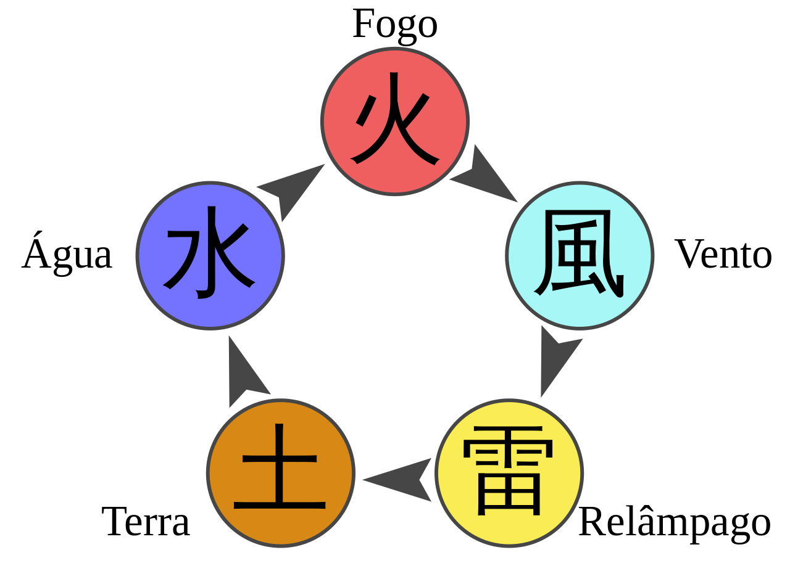

Naruto
Naruto (ナルト) é uma série de mangá escrita e ilustrada por Masashi Kishimoto, que conta a história de Naruto Uzumaki, um jovem ninja que constantemente procura por reconhecimento e sonha em se tornar Hokage, o ninja líder de sua vila. A história é dividida em duas partes, a primeira parte se passa nos anos da pré-adolescência de Naruto, e a segunda parte se passa em sua adolescência. A série é baseada em dois mangás one-shots de Kishimoto: Karakuri (1995), e que por causa dele Kishimoto ganhou uma menção honrosa no prêmio Hop Step da Shueisha no ano seguinte, e Naruto (1997). A editora Panini Comics licenciou e publicou o mangá em três versões no Brasil, e em Portugal é a editora Devir Manga quem licencia e publica o mangá. A história de Naruto continua com o seu filho, Boruto Uzumaki em Boruto: Naruto Next Generations.
Os capítulos de Naruto foram publicados na revista Weekly Shōnen Jump de 1999 a 2014, com estes capítulos compilados e publicados em 72 volumes tankōbon pela editora Shueisha. O mangá foi adaptado para uma série de anime produzida pelo Studio Pierrot e Aniplex, que teve os seus 220 episódios transmitidos pela TV Tokyo no Japão de 2002 a 2007; a adaptação brasileira da série foi exibida na Cartoon Network e no SBT, e atualmente é exibido nos serviços de streaming Crunchyroll, Netflix e Claro Vídeo. Já a adaptação portuguesa da série foi exibida na SIC Radical, SIC, SIC K e no Animax Portugal. Naruto Shippuden, a sequência da série original, estreou no Japão em 2007 e terminou em 2017, após 500 episódios. A adaptação brasileira foi exibida na PlayTV de 2015 a 2017, na Loading entre 2020 e 2021, e atualmente é exibida nos serviços de streaming Crunchyroll, Netflix e Claro Vídeo. Além da série de anime, o Studio Pierrot desenvolveu onze filmes e vários OVAs. No Brasil, alguns filmes foram licenciados e exibidos dublados no país pela Viz Media. Outros produtos relacionados a Naruto como light novels, jogos eletrônicos, e cartas colecionáveis foram desenvolvidos por várias empresas.
A partir de 2017, Naruto se tornou a terceira série de mangá mais vendida na história, vendendo mais de 220 milhões de cópias em todo o mundo, onde foi publicado em 35 países fora do Japão. Os críticos elogiaram o enredo, desenvolvimento de personagens, e as cenas de luta do mangá. Os críticos também observaram que o mangá, que tem uma história coming-of-age, faz uso de referências culturais da mitologia japonesa e do confucionismo.

Enredo
Parte I
(Voltar)A história principal se foca em Naruto e seu desenvolvimento quanto ninja, junto com os seus amigos. Também se centra nas interações entre estes e a influência do ambiente em suas personalidades. Conforme transcorre a série, Naruto se relaciona com Sasuke Uchiha e Sakura Haruno, com quem forma o “Time 7”, juntamente com o sensei Kakashi Hatake. Cabe mencionar que Naruto confia muito neles assim como em em outros personagens que irá conhecendo mais adiante. Enquanto eles aprendem novas habilidades e conhecem novas pessoas e lugares em suas missões, Naruto luta por seu sonho de se tornar o líder máximo de sua aldeia (Hokage) e ser reconhecido como alguém importante. No início, a série se enfoca nos integrantes do Time 7, Naruto, Sasuke e Sakura. Pouco depois, Orochimaru (um dos vilões mais procurados) ataca a Aldeia Oculta da Folha, assassinando o Terceiro Hokage em um ato de vingança pessoal. Isso acaba desencadeando que Jiraiya, um dos três ninjas legendários (Sannins), inicie a busca da sua antiga companheira de equipe Tsunade para designá-la como a Quinta Hokage. Durante a sua busca é revelado que Orochimaru quer encontrar Sasuke (a quem conhece por suas técnicas de dōjutsu) para oferecer-lhe o poder que tanto deseja para matar seu irmão Itachi Uchiha, responsável pelo assassinato de todo seu clã. Sasuke aceita a proposta de Orochimaru e vai treinar com ele, e por isso traindo a sua aldeia. Enquanto isso, Naruto decide fazer algo a respeito, e então resolve deixar a aldeia junto com Jiraiya durante dois anos e meio com o objetivo de treinar e preparar-se para a próxima vez que encontrar Sasuke, a quem tentará salvar.
Parte II (Naruto Shippuden)
(Voltar)Ao concluir o período de treinamento, Naruto regressa a aldeia justo quando uma misteriosa organização denominada Akatsuki está tentando capturar as nove poderosas bestas Bijuus, incluindo a “Raposa de Nove Caudas” que permanece selada dentro dele, com a finalidade inicial de ganhar muito dinheiro, além de controlar e dominar todas as guerras do mundo, e então chegar a dominação mundial, porém por trás disso, existe um objetivo maior, o plano Olho da Lua (Tsuki no Me). O Time 7 e vários outros ninjas da aldeia lutam contra os membros da Akatsuki, somando-se também a missão de resgatar seu antigo companheiro Sasuke. Ao mesmo tempo, este trai Orochimaru e enfrenta Itachi para realizar sua vingança. Embora Itachi morra, Sasuke escuta uma revelação de um membro da Akatsuki, Madara Uchiha, onde explica que Itachi teve a ordem de eliminar seu clã dada pelo alto comando da aldeia. Entristecido por isso, Sasuke ingressa nas forças da Akatsuki com o objetivo de destruir a aldeia. Enquanto isso, vários membros da Akatsuki vão capturando as Bijuus e os Jinchūrikis, enquanto dois integrantes da organização, Pain e Konan, invadem e destroem a aldeia em busca de Naruto. Entretanto, Naruto vence Pain e o convence a deixar a Akatsuki. Em seguida, Pain utiliza suas últimas forças para reviver os habitantes da Aldeia da Folha. Imediatamente depois do ataque de Pain, o Raikage faz um chamado para as demais aldeias para discutir sobre Sasuke, o qual atacou a Aldeia Oculta da Nuvem, isto incita Naruto a dirigir-se ao País do Metal para negociar o castigo de Sasuke. Depois disso, Madara chega na reunião das Cinco Grandes Nações, explicando que sua intenção é obter o poder de todas as Bijuus e os utilizar em seu plano do “Olho da Lua”, que consiste em criar uma ilusão a nível global, suficientemente poderosa parta controlar a humanidade, através da lua. Diante disso, todos os líderes das cinco vilas ninjas, recusando lhe apoiar, se unem para confrontá-lo; por isso, decidem esconder os últimos Jinchūrikis dentro de uma ilha secreta no País do Trovão. Ali, Naruto conhece Killer Bee, um shinobi que contém a Gyuuki dentro dele, e Naruto pede ajuda para que o treine para que possa controlar de forma correta o chakra da Raposa de Nove Caudas. Depois de um árduo treinamento, Naruto obtêm com êxito o controle do poder da raposa, com a ajuda do espírito de sua mãe, Kushina Uzumaki. Com uma nova habilidade, Naruto descobre que Kisame Hoshigaki contêm as informações sobre o lugar onde se escondem as últimas bestas; este se suicida, mas consegue mandar a mensagem com êxito. Enquanto isso Madara vai em busca dos olhos de Nagato, matando Konan no processo, e manda Kabuto capturar os dois ninjas restantes.
Graças ao conhecimento de Orochimaru, Kabuto utiliza um jutsu proibido e revive ninjas famosos para os utilizar na guerra que se aproxima, enquanto que a Aliança Shinobi se prepara de igual maneira. Dentre os mortos ressuscitados, estão Os Irmãos de Ouro e Prata, Ginkaku e Kinkaku, que possuem parte do chakra da Raposa de Nove Caudas, e devido a isto Naruto fica sabendo do que está se sucedendo. Uma vez que se da conta da guerra, Naruto foge com Bee e em seu caminho se encontra com Tsunade e o Raikage; este último tenta persuadi-los para que não se entrometam na batalha, mas Naruto se nega e finalmente o convence a deixá-los ir combater a Akatsuki. Os dois Jinchūrikis, com a ajuda de vários clones das sombras de Naruto, combatem um exército de Zetsus, seres criados a partir do DNA do primeiro Hokage, o que dá vantagem para as forças da Aliança; Gaara e os demais shinobis confrontam os ninjas revividos pelo Edo Tensei. Depois disso, Itachi e Nagato se encontram com Naruto e Bee, e começam a lutar; o Uchiha consegue libertar-se do controle de Kabuto sobre a técnica de ressurreição e ajuda os outros a derrotar Nagato.[44] Pouco depois, Kabuto faz com que o segundo Tsuchikage reviva o seu mais poderoso guerreiro, Madara Uchiha; isto dá a entender que o verdadeiro líder da Akatuki, Tobi, usou na realidade esse nome com o fim de intimidar os seus adversários. Ōnoki – o atual Tsuchikage – e Gaara se veem encurralados pela força de Madara, mas os Kages restantes chegam para equilibrar a situação. Com a ajuda do rin'negan, Tobi cria uma armadilha para Naruto e Bee, já que tem sob o seu comando os cadáveres dos antigos Jinchūrikis com suas respectivas bestas seladas neles. A batalha contra Tobi se intensifica, e depois de descobrir como funciona o seu jutsu especial, conseguem revelar sua verdadeira identidade, o qual se trata de um antigo companheiro de Kakashi Hatake, Obito Uchiha, que presumia-se estar morto. Imediatamente o verdadeiro Madara Uchiha chega na batalha depois de derrotar os cinco Kages, e também o resto do exército ninja chega para apoiar Naruto, e nesse momento Madara e Obito revivem a besta de dez caudas. A luta continua com a chegada dos antigos 4 Hokages e Sasuke Uchiha, que decide apoiar Naruto. Durante a série de batalhas Obito usa o poder das dez caudas, e depois de uma série de eventos e da morte de alguns personagens, conseguem tirar este poder e liberar as Bijuus, as quais são retomados por Madara, que fere gravemente Naruto e Sasuke. Com a ajuda dos recém redimidos Kabuto e Obito, estes voltam a batalha, agora com os poderes incrementados proporcionados pelo sábio dos 6 caminhos, filho da Deusa Kaguya. Madara lança o Tsukuyomi Infinito com o qual se concretiza o plano do “Olho da Lua" (Tsuki no Me). Todos na Terra, com exceção de Naruto, Sasuke, Sakura, Kakashi e Obito entram dentro da ilusão. Depois Madara seria traído pelo Zetsu negro, que na realidade é filho de Kaguya, e este usa Madara para trazer a vida a sua mãe, a qual deseja recuperar todo o seu poder, absorvendo o poder de todos os que estavam presos dentro da ilusão, mas depois de uma batalha é selada junto com o Zetsu Negro. Nesse ponto Sasuke tenta matar os 5 Kages, as 9 Bijuus e Naruto (por consequência de ser o Jinchūriki de todas as 9 Bijuus), argumentando que deseja formar um mundo sem o sistema ninja, porém é vencido por Naruto na batalha final. Depois disso eles desfazem o Tsukuyomi Infinito com o rin'negan de Sasuke e o chakra das 9 Bijuus de Naruto. Após voltarem para a vila, Sasuke se redime e parte em viagens a fim de ver como o mundo a fora ficou após tudo isso e buscando redenção por seus pecados e Kakashi vira o sexto Hokage. Mais de 12 anos após o término da quarta grande guerra ninja, Naruto cumpre o seu sonho de se tornar o Hokage e ser reconhecido por todos da aldeia, ele se casa com Hinata e juntos tem um filho, Boruto Uzumaki, e uma filha, Himawari Uzumaki, enquanto Sasuke se casa com Sakura e juntos tem uma filha, Sarada Uchiha.
Elementos da História
(Voltar)Naruto tem um grande número de personagens que, em sua maioria, se distinguem por serem ninjas. A princípio estudam na Academia Ninja, porém logo são divididos em trios Genins (grupos de ninjas novatos), os quais são designados a um sensei experiente. Estes núcleos se convertem sucessivamente nas bases para a interação entre os personagens, onde as equipes são elegidas para missões de acordo com o seu desempenho e suas capacidades. O “Time 7” se converte pouco a pouco no marco social onde Naruto começa a conviver, para ir se familiarizando com seus companheiros Sasuke e Sakura, como também o seu sensei Kakashi, com quem integram o elenco principal da história. As outras equipes são formadas por antigos companheiro de classe de Naruto, com os quais ele se conecta por meio de vários aspectos, aprendendo suas vulnerabilidades e aspirações, aspectos que frequentemente relaciona com sua própria vida. Não obstante, não existem somente trios de ninjas, mas também existem exceções de conjuntos formados por múltiplos de três. No mundo de Naruto, os países operam como entidades políticas separadas, governadas por senhores feudais. Dentro destes países estão as aldeias ocultas (隠れ里 kakurezato?) (assentamentos de habitações ninjas). Uma aldeia oculta mantém a economia do país por meio da formação de jovens ninjas desde da infância, utilizando-os para realizar missões em outros países e cobrar por elas. O ninja de uma aldeia oculta também serve como uma força militar para o país de origem. Cabe mencionar que os líderes das aldeias ocultas estão em igual posição com os líderes dos respectivos países. Na trama, existem cinco países diferentes: o País do Vento, o País do Fogo, o País do Trovão, o País da Água e o País da Terra (conhecidos integralmente como as “Cinco Grandes Nações Shinobis”). Estes países são os mais poderosos no mundo de Naruto, sendo governados por um senhor feudal, enquanto que os líderes das aldeias ocultas nos ditos países ostentam o título de Kage. Foram mencionados outras nações aparentemente mais pequenas no mangá e no anime, mas suas informações não foram todas reveladas.

Personagens
(Voltar)A grande maioria dos personagens introduzidos na série são ninjas provenientes das aldeias e facções que aparecem na história. Os protagonistas pertencem a Aldeia Oculta da Folha e o enredo é narrado em sua maioria em torno de suas aventuras.
O personagem principal que dá nome a série é Naruto Uzumaki (うずまきナルト?), um jovem ninja que carrega em seu interior o demônio Kyūbi, e deseja ser o Hokage de sua aldeia, já que ninguém queria estar perto dele por causa da Kyūbi e para demonstrar seu verdadeiro poder, como igualmente sua valentia.[48] Seus companheiros de grupo (no início da série) são Sasuke, Sakura e Kakashi (este último seu mestre sensei). Com o desenrolar da história, o grupo muda a partir do momento que Sasuke decide abandonar a aldeia para realizar sua vingança pessoal. Pouco depois, Naruto se converte em aprendiz de Jiraiya, um pervertido guerreiro.
Sasuke Uchiha (うちはサスケ?) é um membro da clã Uchiha. É um garoto sério, e possui uma grande habilidade para as artes ninjas estilo de fogo. Seu objetivo é ser suficientemente forte para derrotar seu irmão maior Itachi, que assassinou todos os demais membros do seu clã. Em seguida, abandonará a aldeia para treinar com Orochimaru, um ninja corrompido e sem piedade, que busca dominar todos os ninjutsus do mundo.
A única garota do grupo é Sakura Haruno (春野サクラ?), que inicialmente está apaixonada por Sasuke, tal como todas as suas companheiras da Academia Ninja e despreza Naruto. Ao avançar da história, Sakura começa a gostar da amizade de Naruto. Se torna aprendiz de Tsunade, com quem aprende técnicas medicinais ninjas.
Kakashi Hatake é o primeiro mestre da equipe de Naruto, Sasuke e Sakura. É um ninja experiente, severo a primeira vista e amante das novelas para adultos, e se preocupa muito com o trabalho em equipe. Possui um Kekkei Genkai, o Sharingan em seu olho esquerdo, o qual obteve por parte de um membro do clã Uchiha que era seu amigo (Obito Uchiha). Com este olho, Kakashi copiou muitas técnicas de outros ninjas, o que lhe rendeu o nome de “O Ninja que Copia”.
Os demais personagens principais se encontram nas outras equipes ninjas que compartilharam a classe com Naruto na Academia Ninja, junto com seus respectivos mestres. Destacam os times formados por Ino, Choji, Shikamaru e o sensei Asuma, o de Hinata, Kiba, Shino e o sensei Kurenai, e o time formado por Rock Lee, Tenten, Neji e o sensei Maito Gai.
Outros personagens importantes para a história são os “Três Ninjas Lendários” (Tsunade, Jiraiya e Orochimaru),[58] além dos membros da Organização Akatsuki, formado por ninjas renegados de diversas procedências, cujo objetivo é capturar os demônios Bijuu por um motivo que será revelado conforme avança a história. Esta organização foi criado sob a influência de Obito Uchiha, que junto com Madara Uchiha e a Deusa Kaguya seriam os três antagonistas principais.

Produção
(Voltar)O autor da série, Masashi Kishimoto, primeiro autorizou o one-shot de Naruto em agosto de 1997 na revista Akamaru Jump. O Naruto original tinha uma temática significante de amizade e confiança. No início da história, nem Naruto e nem Kuroda confiavam em ninguém, mas no final os dois se tornam amigos e passam a confiar um no outro. Apesar dos bons resultados na pesquisa com leitores depois do lançamento, Kishimoto pensou: "a arte está ruim e a história uma bagunça!". Kishimoto também revelou que ele estava originalmente trabalhando no mangá Karakuri para o Hop Step Award quando, insatisfeito com as mudanças da história, decidiu trabalhar em algo diferente, o que o levou a criar Naruto.
Quando estava a criar a história de Naruto, Kishimoto olhou para outros mangás do estilo shonen para influenciar o seu trabalho, apesar dele tentar tornar seus personagens serem únicos o máximo possível. A separação dos personagens em diferentes times teve a intenção de dar a cada grupo um sabor especial. Kishimoto queria que cada membro fosse "extremo", tendo uma grande quantidade de aptidão em um atributo mas não tendo talento em outro.
A inserção dos vilões na história foi principalmente para agir como contrapartes para os valores morais dos personagens. Kishimoto admitiu que esse foco em ilustrar as diferenças de valores nos vilões foi tão importante na hora da criação dos vilões que "Eu não pensei realmente como eles seriam em combate". Quando desenhava os personagens, Kishimoto seguiu um processo de cinco partes que ele seguia continuamente: "concept and rough sketch, drafting, inking, shading, and coloring". Esses passos foram usados quando ele desenhou o mangá atual e fez as ilustrações coloridas dos tankobon, as capas da Weekly Shonen Jump, e outras mídias, mas as ferramentas que ele usava mudavam ocasionalmente. Por exemplo, ele usou um "airbrush" em uma ilustração para uma capa da Weekly Shonen Jump, mas decidiu não usar mais para desenhos futuros por causa da grande quantidade de correções que era necessário.
Kishimoto também falou que precisa definir algumas regras para ele poder criar a história mais facilmente. Kishimoto queria representar a tradição do zodíaco chinês, que tem uma grande presença no Japão, assim criando os símbolos com as mãos usados para fazer os jutsus. Quando Kishimoto estava criando o cenário da série ele inicialmente se concentrou em fazer o design da Vila da Folha, o ambiente inicial da série.
Kishimoto falou que o design da Vila da Folha foi criado "bem espontaneamente sem muitas reflexões", apesar dele admitir que o cenário é baseado na sua casa na Prefeitura de Okayama no Japão. Sem ter um período de tempo específico, Kishimoto incluiu elementos modernos na série como lhe convinha, mas especificamente excluindo as armas projéteis e os veículos. Para o material de referência, Kishimoto fez sua própria pesquisa na cultura japonesa - e as incluiu em seu trabalho. Quanto a tecnologia, Kishimoto falou que Naruto não teria armas de fogo. Ele disse que talvez incluisse automóveis, aviões, e computadores com pouco poder de processamento. Ainda confirmou em uma outra entrevista que pensa no último capítulo da série dando um grande desfecho para a trama.
Mídias
Mangá
(Voltar)Os capítulos de Naruto foram publicados na revista Weekly Shonen Jump da editora Shueisha de 21 de setembro de 1999 (nº 43) a 10 de novembro de 2014 (nº 50). O mangá também foi publicado em 72 volumes em formato tankōbon no Japão e em outros países, com os 27 primeiros volumes correspondendo a Parte I, e o resto a Parte II. Os primeiros 238 capítulos pertencem a Parte I e constituem a primeira parte do enredo de Naruto, enquanto que os capítulos 239 a 244 compreendem uma série gaiden que foca no passado do personagem Kakashi Hatake. Já o resto dos capítulos pertencem à Parte II (245 a 700), que continua o enredo após um intervalo de tempo de dois anos e meio. A editora Shueisha compilou estes capítulos e os publicou em 72 volumes tankōbon, com os primeiros 27 volumes tankōbon pertencendo à Parte I, e os volumes subsequentes pertencendo à Parte II. O primeiro volume tankōbon foi publicado em 3 de março de 2000. E o último volume tankōbon foi publicado em 4 de fevereiro de 2015. Além disso, vários volumes film comics baseados em cada um dos filmes de Naruto, foram publicados pela Shueisha. A editora Shueisha também lançou a série de mangá em japonês para download de celular em seu website Shueisha Manga Capsule. No lançamento do capítulo final da série, uma minissérie centrada nos filhos dos personagens principais foi anunciada. Intitulada Naruto Gaiden: Nanadaime Hokage to Akairo no Hanatsuzuki (Naruto−ナルト−外伝・七代目火影と緋色の花つ月?). A série começou sua serialização em 27 de abril de 2015 na revista Weekly Shonen Jump, e terminou após dez capítulos em 6 de julho de 2015, que foram compilados e lançados em volume único. No Brasil, este volume único foi publicado pela editora Panini Comics em outubro de 2016.
Spin-offs
(Voltar)Uma série de mangá spin-off de comédia escrita por Kenji Taira, chamada Rock Lee no Seishun Full-Power Ninden (ロック・リーの青春フルパワー忍伝?) centra-se no personagem Rock Lee, um personagem que aspira a ser um forte ninja, mas não possui habilidades mágicas de jutsu. Os capítulos do mangá foram publicados na revista Saikyō Jump de 3 de dezembro de 2010 a 4 de julho de 2014, com os capítulos compilados e publicados pela editora Shueisha em 7 volumes tankōbon, no Brasil a série é licenciada e publicada pela editora Panini Comics sob o título "Rock Lee e A Primavera da Juventude" desde setembro de 2017. O mangá foi transformado em uma série de anime, que foi produzida pelo Studio Pierrot e exibida na TV Tokyo em 3 de abril de 2012 a 26 de março de 2013. A Crunchyroll transmitiu simultaneamente todos os episódios da série. Kenji Taira também escreveu um outro spin-off de Naruto, chamado Uchiha Sasuke no Sharingan Den (うちはサスケの写輪眼伝?), que também foi publicado na revista Saikyō Jump em 3 de outubro de 2014 a 1 abril de 2017, e o enredo se foca em Sasuke.
Uma série sequência de Naruto mensal intitulada Boruto: Naruto Next Generations começou a ser publicada na revista Weekly Shonen Jump no início de 2016, sendo ilustrada por Mikio Ikemoto e escrita por Ukyō Kodachi com a supervisão de Kishimoto. Ikemoto foi o assistente principal de Kishimoto ao longo da série original de Naruto, e Kodachi foi o seu parceiro de redação para o roteiro do filme Boruto: Naruto the Movie. A série mensal foi precedida de um one-shot que foi escrito e ilustrado por Kishimoto.
Anime
(Voltar)Tetsuya Nishio foi o designer de personagens de Naruto quando o mangá foi adaptado para uma série de anime; Kishimoto pediu que Nishio recebesse esse cargo. Dirigido por Hayato Date e produzido pelo Studio Pierrot e TV Tokyo, o anime de Naruto estreou no Japão em 3 de outubro de 2002, e foi concluído em 8 de fevereiro de 2007 depois de 220 episódios. Os primeiros 135 episódios foram adaptados da Parte I do mangá; os restantes 85 episódios são originais e usam elementos do enredo que não estão no mangá. Uma versão remasterizada em alta definição do anime com novos efeitos 2D e 3D foi lançada sob o título Naruto: Shōnen Hen (少年篇?). Coletâneas dos episódios da série foram lançadas para VHS e DVD.
Viz Media licenciou a série de anime para transmissão e distribuição no Brasil e em Portugal, porém, em 2017 a série passou a ser licenciada e distribuída pela Televix Entertainment na América Latina. A adaptação brasileira do anime foi exibida na Cartoon Network e no SBT em 2007 a 2011. Atualmente, está sendo transmitida pela Warner Channel desde julho de 2022, no bloco Wanimé. No streaming, a série é exibida pelos serviços Crunchyroll, Netflix, Claro Video e Pluto TV. A série também foi lançada em DVD no país pela PlayArte. Já a adaptação portuguesa estreou em julho de 2008 na SIC Radical, em agosto de 2008 passou a ser transmitida pela SIC, e em janeiro de 2009 estreou no Animax Portugal e na SIC K em 2011.
OVAs
(Voltar)Onze OVAs de Naruto foram lançados.
- Encontre o Trevo de Quatro Folhas Vermelho!! (2003). Acompanha o Time 7 enquanto ajudam Konohamaru com sua missão em recuperar um trevo de quatro folhas que faz um desejo se tornar realidade.
- Missão de Proteção a Takigakure (2004). O Time 7 está em uma missão para acompanhar um shinobi para sua cidade natal.
- A Grande Gincana da Vila da Folha (2004). Vários times de ninjas, incluindo o Time 7, participam de uma competição esportiva onde o prêmio é uma semana de férias das missões.
- Batalhem Finalmente!! Jōnin vs. Genin!! Sem Discriminação: A Grande Abertura da Exibição de Lutas!! (2005). A Quinta Hokage Tsunade cria uma competição entre Jonin (ninja de alto nível) e Genin (ninja de baixo nível). O OVA foi lançado originalmente em um disco extra com a edição japonesa do jogo eletrônico Naruto: Ultimate Ninja 3 para o PlayStation 2.
- Shippū! Konoha Gakuen Den! (2008). Este OVA segue Naruto Uzumaki e seus colegas enquanto vivem suas vidas no ensino médio.
- Naruto: A Estrada Atravessada (2010). Concentra-se no Time 7 depois do encontro com Zabuza e Haku.
- Naruto, o Gênio, e os Três Desejos, Acredite! (2010). Enquanto o Time 7 está na praia, Naruto encontra uma garrafa e a abre para encontrar um gênio que concede três desejos.
- Naruto x UT (2011). Naruto é derrotado por Sasuke e é declarado morto; os eventos que levam ao combate são mostrados em analepse.
- O Exame Chūnin das Chamas! Naruto vs. Konohamaru! (2011). Naruto e Konohamaru são participantes dos exames Chunin, e lutam sem limites entre si.
- Lado Ensolarado da Batalha (2014). Em seu sono, Sasuke sonha com o irmão Itachi fazendo-o tomar café da manhã repetidamente até que esteja perfeito.
- O Dia que Naruto se Tornou Hokage (2016). Naruto Uzumaki é oficialmente o Sétimo Hokage, mas ele não vai à cerimônia.
Filmes
(Voltar)A série foi adaptada em onze filmes; os três primeiros correspondem à primeira série de anime, e os oito restantes correspondem à segunda série. As datas na lista abaixo são dos lançamentos da versão original japonesa; apenas dois filmes foram lançados no Brasil.
- Gekijōban Naruto: Daikatsugeki! Yukihime Ninpōchō Dattebayo!! (2004). O Time 7 vai ao País da Neve para proteger a gravação e os atores de um filme. No Brasil, o filme foi lançado diretamente em DVD. O quarto OVA de Naruto, A Grande Gincana da Vila da Folha, foi lançado junto com o DVD japonês do filme.
- Gekijōban Naruto: Daigekitotsu! Maboroshi no Chiteiiseki Dattebayo (2005). Naruto, Shikamaru e Sakura vão a uma missão ninja que acaba envolvendo-os em uma guerra entre a Vila Oculta da Areia e uma grande força de guerreiros blindados.
- Gekijōban Naruto: Dai Koufun! Mikazuki Jima no Animal Panic Dattebayo! (2006). Naruto, Sakura, Lee e Kakashi são designados para proteger o futuro príncipe do País da Lua, Hikaru Tsuki.
- Gekijōban Naruto Shippuden (2007). Naruto vai em uma missão para proteger o sacerdote Shion, que começa a ter visões de sua morte.
- Gekijōban Naruto Shippuden: Kizuna (2008). Naruto e Sasuke juntam forças quando ninjas do País do Céu atacam a Vila da Folha.
- Gekijōban Naruto Shippuden: The Lost Tower (2010). Naruto é enviado 20 anos no passado enquanto ele explorava uma torre mística para capturar um ninja desonesto e descobre o quarto Hokage, seu pai, está vivo na linha do tempo.
- Gekijōban Naruto Shippuden: Hi no Ishi wo Tsugumono (2009).[134] O Time 7 trabalha para evitar que Kakashi se sacrifique para acabar com uma guerra mundial.
- Gekijōban Naruto: Blood Prison (2011). Naruto é preso por tentativa de assassinato do Raikage; Quando ele tenta sair da prisão, ele descobre seus segredos.
- Road to Ninja: Naruto the Movie (2012). Naruto e Sakura são enviados para um universo alternativo por Tobi e descobrem o significado de companheirismo e paternidade. A história, o roteiro e os desenhos de personagens foram criados por Masashi Kishimoto.
- The Last: Naruto the Movie (2014).[138] Naruto e seus companheiros tentam impedir que a lua colida com a Terra. O filme explica algumas pontas soltas que envolvem a mitologia da série e se concentra no relacionamento romântico de Naruto e Hinata. A história, o roteiro e os desenhos de personagens foram criados por Masashi Kishimoto, que também atuou como chefe de produção. No Brasil, o filme foi lançado pela PlayArte apenas em cinemas em maio de 2015.
- Boruto: Naruto the Movie (2015). O filme se foca nos filhos dos personagens principais, principalmente em Boruto Uzumaki, que treina com Sasuke Uchiha, o rival de seu pai, para superá-lo. A história, o roteiro e os desenhos dos personagens foram criados por Masashi Kishimoto, que também atuou como chefe de produção.
Trilha Sonora
(Voltar)As trilhas sonoras da primeira fase de Naruto foram compostas e arranjadas por Toshio Masuda. A primeira, intitulada Naruto Original Soundtrack foi lançada dia 3 de abril de 2003 e contém vinte e duas faixas que apareceram durante a primeira temporada do anime. A segunda, chamada Naruto Original Soundtrack II teve lançamento dia 18 de março de 2004 e contém dezenove faixas. A terceira, denominada de Naruto Original Soundtrack III começou a ser vendida dia 27 de abril de 2005 e contém vinte e três faixas.
Um conjunto de duas trilhas sonoras contendo todas as aberturas e encerramentos da primeira fase, intitulados Naruto: Best Hit Collection e Naruto: Best Hit Collection II, foi lançado dia 17 de novembro de 2004 e dia 2 de agosto de 2006, respectivamente. De todas as faixas da série, oito foram selecionadas e lançadas dia 19 de dezembro de 2007 em um CD chamado Naruto in Rock – The Very Best Hit Collection Instrumental Version. Cada um dos três filmes da primeira fase têm uma trilha sonora que teve seu lançamento perto da estreia de seus respectivos longas. Também existem vários CD Drama que contêm a voz original dos atores que dublam personagens em Naruto.
As trilhas sonoras de Naruto Shippuden têm sido produzidas por Yasuharu Takanashi; embora alguns episódios usem faixas da primeira fase. O primeiro e o segundo álbum (Naruto Shippūden Original Soundtrack e Naruto Shippuden Original Soundtrack II) foram lançados dia 9 de dezembro de 2007 e dia 16 de dezembro de 2009, respectivamente. Naruto All Stars teve lançamento em julho de 2008 e possui dez músicas originais de Naruto remixadas e cantadas por personagens da série. Dez temas das duas fases foram reunidos no box Naruto Super Hits 2006-2008, publicado dia 23 de julho de 2008. Cada um dos filmes de Naruto Shippuden tiveram suas trilhas sonoras lançadas a partir agosto de 2007. A trilha sonora do último filme lançado, The Last: Naruto the Movie, começou a ser vendida dia 3 de dezembro de 2014. 7 anos após a chegada do CD da OST II do anime, finalmente foi lançado o terceiro disco da trilha sonora de Naruto Shippuden, intitulado Naruto Shippūden Original Soundtrack III, em 06 de Julho de 2016.
Jogos Eletrônicos
(Voltar)Os jogos eletrônicos de Naruto foram lançados para diversos consoles da Nintendo, Sony e Microsoft. A maior parte deles são jogos de luta em que o jogador pode controlar um dos personagens da franquia e enfrentar os restantes. O primeiro jogo de Naruto foi Naruto: Konoha Ninpōchō, lançado no Japão em 2003 para o console portátil WonderSwan Color. Os primeiros jogos lançados fora do Japão foram Naruto: Gekitou Ninja Taisen e Naruto: Saikyou Ninja Daikesshu, lançados no ocidente como Naruto: Clash of Ninja e Naruto: Ninja Council.
Jogos de Cartas Colecionáveis
Publicado pela Bandai, o Naruto Collectible Card Game é um jogo de cartas colecionáveis baseado na série. O jogo foi lançado em 2006 e depois de um tempo lançado em vários países. No Brasil o jogo já foi vendido por meio de pacotes individuais e álbuns de figurinhas. Além disso também foram lançados tazos especiais pela empresa Elma Chips em seus produtos com a marca de uma shuriken em 2008.
Artbooks e Databooks
Foram lançados vários suplementos para a série Naruto.
Um artbook chamado Art of Naruto: Uzumaki contém ilustrações da Parte 1 do mangá e foi lançado no Japão e nos Estados Unidos. Para a Parte 2 do mangá foi lançado o artbook PAINT JUMP: Art of Naruto pela Shueisha no dia 4 de Abril de 2008.
Uma série de Guidebooks foram lançadas. Para a Parte 1 foram lançados no Japão os DataBooks Primeiro Data Book Oficial (秘伝・臨の書キャラクターオフィシャルデータBOOK Hiden: Rin no Sho Character Official Data Book?) e Segundo Data Book Oficial (秘伝・闘の書キャラクターオフィシャルデータBOOK Hiden: Tō no Sho Kyarakuta Ofisharu data?). Esses livros contém os perfis dos personagens e guia de Jutsu. Para a Parte 2 da série foi lançado o Terceiro DataBook.
Para o anime, uma série de Guidebooks chamada Naruto anime profiles foi lançada. Esses livros contém informações sobre a produção dos episódios do anime e explicações para o design dos personagens.
Recepção
(Voltar)Naruto tem tido uma boa recepção comercial tanto no Japão e nos Estados Unidos como no restante do mundo. A partir do volume 36, vendeu mais de 71 milhões de cópias em seu país de origem. Em 2008, foi vendido aproximadamente dois milhões de cópias do volume 43, sendo considerado um dos dez mangás mais vendidos no mesmo território. Embora os volumes 41, 42 e 44 também estarem no Top 20, cada um deles vendeu menos exemplares que o mencionado anteriormente. No total, o mangá já vendeu 4.261.054 cópias no Japão em 2008, tornando-se a segunda série mais vendida e uma das mais bem-sucedidas da VIZ Media, representando quase 10% do total das vendas realizadas em 2006. O sétimo volume foi a primeira edição de mangá a ganhar um Prêmio Quill depois de ganhar o prêmio de “Melhor Graphic Novel” também em 2006. O mangá também apareceu na USA Today Booklist com o volume onze tendo o título de melhor série de mangá, até ser ultrapassado pelo volume vinte e oito, que conquistou a 17ª posição na primeira semana de lançamento em março de 2008. O volume vinte e oito também é um dos volumes com o melhor lançamento de todos os mangás há anos e é o título de mangá mais vendido de 2008. Em abril de 2007, o volume catorze ganhou o prêmio da Viz de "Manga Trade Paperback of the Year". A partir de 2008, a série gráfica tornou-se o principal mangá nos Estados Unidos, com 31 volumes publicados até esse período, enquanto a palavra Naruto foi um dos 10 termos mais pesquisados no Yahoo! durante 2007 e 2008.
Apesar do seu excelente crescimento no mercado internacional, Naruto obteve críticas divididas por parte de vários especialistas da indústria. Por exemplo, para A. E. Sparrow do IGN, alguns volumes do mangá focam apenas em certos personagens, tal fator pode ocasionar um aumento considerável do público que busca por um novo volume. Ele também parabenizou a maneira que Kishimoto combina cenas de luta com comédia e um bom trabalho artístico. No entanto, a revista Neo descreveu Naruto como um personagem irritante, atribuindo a ele um vício doentio. Por sua vez, Carl Kimlinger do Anime News Network elogiou o design dos personagens, já que cada um consegue manifestar suas emoções individuais. Entretanto, observou que todas as personalidades são “tontíssimas”. Kimlinger também manifestou apreço pelo frescor das cenas de luta, porém destacou que alguns volumes possuem tantos combates que impedem um adequado desenvolvimento da história.